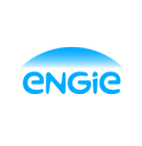
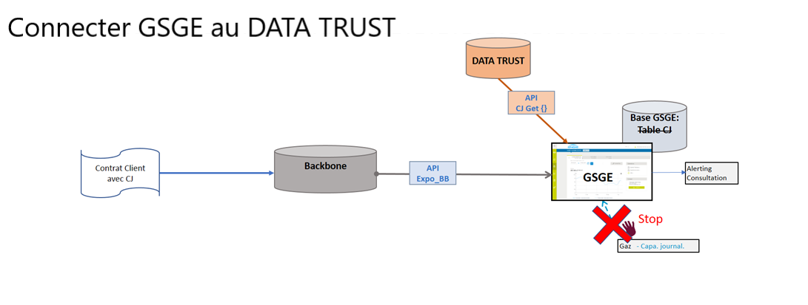
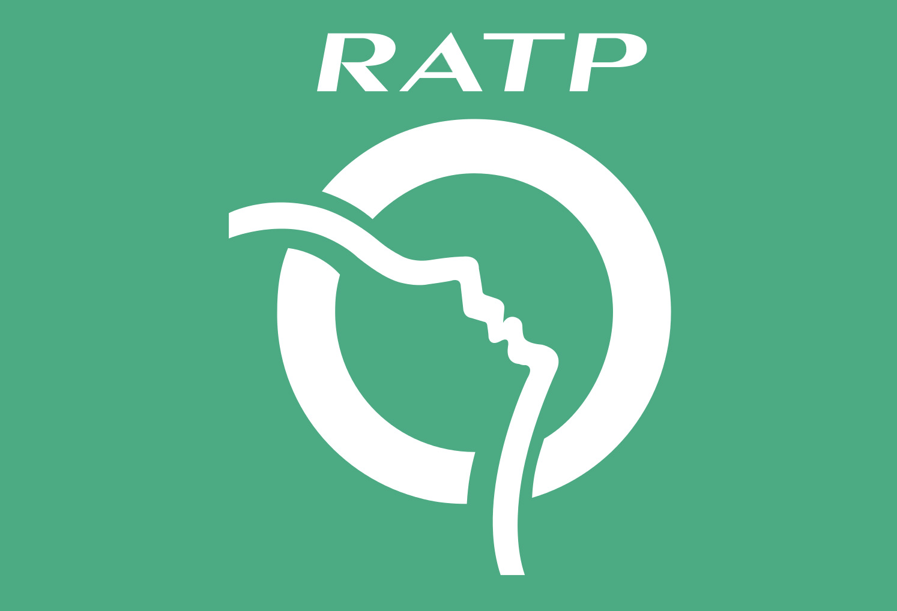

Soutenance de stage
En vue de l’obtention d’un diplôme de Master 2
Programmation et Logiciels sûrs
(PLS)
Présenté par Omar OUALI
Plan :
- Présentation d'UMANIS
- Le projet GSGE (ENGIE)
- Le projet MANIPP (RATP)
- Bilan
UMANIS
C'est plus de 2600 collaborateurs et un chiffre d’affaires de 200M€, Umanis s’inscrit dans le TOP 20 des ESN en France. Leader depuis 27 ans dans
La DATA
Le DIGITAL
Et la CONNAISSANCE CLIENT
UMANIS en quelque chiffres
L'extranet GSGE
Acteur majeur de l'energie hors pétrole à travers le monde
les Technologies du Projet
Tâches réalisées
- Tracer la courbe capacité journalière et horaire
- Exporter ces données dans des fichiers
- Création d'alertes en cas de dépassement
- Ajout de nouvelles vues
Ecrans Ajoutés
- Ecran watchdog des données de facturation
- Ecran Watchdog des données de l'API GEMS
La plateforme web MANIPP
Module d’ANalyse des Incidents Portes Palières des lignes automatisées du métro parisien
les Technologies du Projet
- Récupération des fichiers sources
- Importation des données au standard MANIPP
- Création d’algorithmes d’analyses
- Production des graphiques de répartition d'Alarmes de déverrouillage
Vue sur la plateforme
Bilan
- Immersion dans le milieu professionnel.
- Nouvelles connaissances métiers et techniques dans le domaine.
- Mise en pratique des connaissances.
- Dépassement de soi.
- Autonomie.